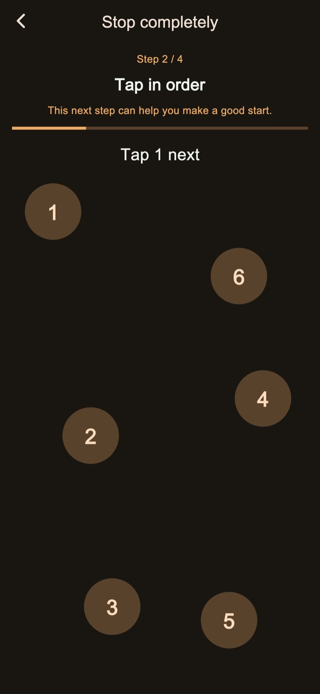
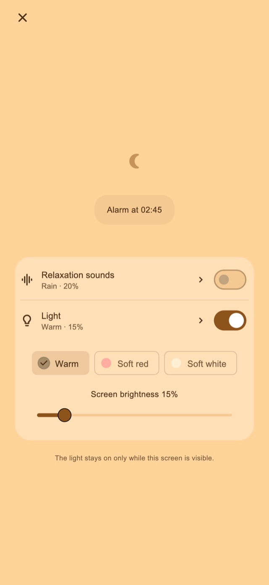

Rain or waves, at your volume.
Choose rain, waves or white noise. The sound fades out before the first reminder and stops by the time vibration begins.
Vibration alarms for naps & bedtime
For when a short nap turns into a long sleep.
Or you fall asleep while settling your child.
01Vibration patterns
Changing lengths and rhythms feel different from your everyday notifications. That unfamiliar feeling is designed to help you notice the alarm and wake up.
The app combines patterns with changes in duration and spacing. Choose from four modes: Random, Notification Mix, Mostly Long and Mostly Short.
An illustration of vibration rhythms
Try the vibrations in the app before choosing a pattern.
02Multiple reminders
No need to create each alarm separately. Stop the current reminder and wait for the next one, or finish the remaining set once you are up.
Adjusting the number of reminders and their spacing requires Premium.
From setup to finishing the set
Finish the set when up
An illustration of a set with three reminders.
03Stop tasks
Solve a calculation, tap numbers in order, hold or tap repeatedly. Stopping the alarm involves actions that use your mind and hands.
Standard stop and snooze tasks are free. Editing and combining the steps requires Premium.

How to use · Night Screen
Adjust the brightness and clock display in Night Screen. You can also hide the display while waiting and tap to see the clock again.
Use a duration such as 30 minutes, or set the time you want to wake up.
Dim the screen. Turn on relaxing sounds or light only if you want them.
Complete the stop tasks and finish the remaining reminders you no longer need.
Night Screen sounds & light
For naps or settling your child. Turn either on from Night Screen whenever you need it.
Choose rain, waves or white noise. The sound fades out before the first reminder and stops by the time vibration begins.
For feeds or checking on your child at night. Choose warm, pale red or pale white light, then adjust the screen brightness.
Relaxing sounds and light are both free.

Free & Premium
Try the vibrations and stop tasks. Choose Premium if you want more control.
| Feature | Free | Premium |
|---|---|---|
| Four vibration modes | Included | Included |
| Multiple reminders | Standard settings | Adjust count & spacing |
| Stop & snooze tasks | Standard tasks | Edit & combine steps |
| Night Screen, sounds & light | Included | Included |
| Custom vibration patterns | — | Create & edit |
| Ads | On some screens | All removed |
Premium offers a monthly plan or a one-time purchase. See the in-app purchase screen for prices. Monthly subscriptions renew automatically; manage or cancel them in your store account settings.
FAQ
Keep Night Screen open to use the app’s custom vibration patterns. While your phone is locked or another app is open, iOS controls vibration and your chosen pattern and strength will not apply.
The alarm is designed to use vibration instead of an alarm tone. Relaxing sounds play only when you turn them on. Vibration can make noise against a desk or bedding, and device settings can affect behavior. Test it where you plan to use it.
Four vibration modes, standard multiple reminders, stop and snooze tasks, Night Screen, relaxing sounds and light. Adjusting reminder count and spacing, editing stop tasks, creating patterns and removing ads require Premium.
No app-specific account is required. Settings and schedules are stored on your device. See the privacy policy for information about data used for advertising, analytics and purchases.
Follow the app’s introduction to allow the required permissions, then try Permissions & Test. Android battery-saving settings may affect operation. Alarm delivery and waking are not guaranteed.
Download
Vibration alarms for naps and bedtime.
Free basics · In-app purchases
iPhone: iOS 26.1 or later / Android: 8.0 or later
App available in 20 languages, including English and Japanese